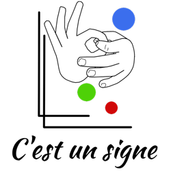

Site prinpcial pour l'association C'est un signe
Publié le 20 juillet 2017
Wordpress

Je travaillais en tant que responsable technique chez l’association C’est un signe à but non lucratif à pour promouvoir la culture sourde, par biais de la Langue des signes et de protéger l'enfant (Sourd, malentendant, et entendant) dans son intégrité physique, cognitive et émotionnelle. J’ai refait tout le site entier qui était sous une CMS qui s’appellait Joomla pour passer Wordpress avec un nouveau template à ma façon. J’étais très fier de réaliser ce travail magnifique.
Je quittais l’association en 2017, car je n’étais plus convaincu pour les nouveaux objectifs du comité de l’association et je n’avais pas bénéficié la valeur de mon travail.
- Liens : www.cestunsigne.ch
- Client : Arielle de Sadeleer, la présidente de l'association
- Twitter du client : @cestunsigne.ch
- Instagram du client : @cestunsigne
- Fracbook du client : @cestunsigne.ch
- Création du site : Septembre 2014
- Rénovation du site : 22 août 2015 - 2ème version
- Système du site : Wordpress
- Information important : Je ne prends plus la responsabilité de ce site depuis 31 juillet 2017.